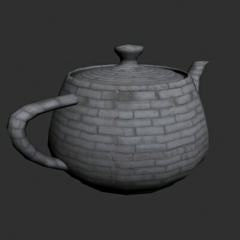
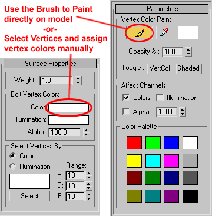

UDN
Search public documentation:
VertexBlendingTutorialCH
English Translation
日本語訳
한국어
Interested in the Unreal Engine?
Visit the Unreal Technology site.
Looking for jobs and company info?
Check out the Epic games site.
Questions about support via UDN?
Contact the UDN Staff
日本語訳
한국어
Interested in the Unreal Engine?
Visit the Unreal Technology site.
Looking for jobs and company info?
Check out the Epic games site.
Questions about support via UDN?
Contact the UDN Staff
顶点混合指南
文档概要：本文档向您展示如何对静态网格使用顶点混合以及将其导入Unreal ED的方法。 文档修改日志：Jason Lentz（DemiurgeStudios）最新更新，加入了额外的材质浏览器步骤和附加示例的下载。原作者为Jesse Taylor（Structure Studios）。什么是顶点混合？
在一个坚果壳中，根据运用顶点绘制法预先确定好的顶点，可用顶点混合将网格物体上的一种材质混合成另一种，或混合为空。它的特点是简单、灵活、应用广泛。无需复杂的蒙皮网格即可创造出更为真实、自然的模型。另外，可以对其他模型重复使用相同的材质，或者仅把网格物体上的材质替换掉即可。步骤
一切从模型准备工作开始，本指南会在导出静态网格物体的过程中涉及3D Studio Max，但是不会涉及太多的细节。此外，本指南将涵盖三种基本的顶点混合方法。- 使用相同的UV贴图将一种材质混合到另一种。
- 将一种材质混合成空。
- 使用两种不同的UV贴图坐标（两种UV管道）将一种材质混合到另外一种。
使用相同的UV贴图混合材质
这种方法让您能够使用相同的UV坐标将一种材质混合到另一种，如下图所示。 以下是使用到的两种纹理。
以下是使用到的两种纹理。

 如图所示，褐色砖块混合成了灰色砖块，保留了相同的贴图坐标。这种方法有很多用途，其中包括给金属加上锈斑，木头的烧痕，石头上的泥径，木头上的苔藓， 布料的褶皱等等。
从3D Max中带纹理的网格物体开始，与下图类似。
如图所示，褐色砖块混合成了灰色砖块，保留了相同的贴图坐标。这种方法有很多用途，其中包括给金属加上锈斑，木头的烧痕，石头上的泥径，木头上的苔藓， 布料的褶皱等等。
从3D Max中带纹理的网格物体开始，与下图类似。

有三种方法可以为顶点着色。- 如果模型是可编辑网格物体，选中每个顶点，然后用“表面属性（Surface Properties）”下的“编辑顶点颜色（Edit Vertex Colors）”手动给顶点着色。
- 或者可以使用修改器列表的“编辑网格”区域中的“ VertexPaint Modifier （顶点喷涂修改器）”。选择笔刷工具，在模型上点击右键，给顶点着色（查看被着色的顶点请点击“VertCol”开关）。

请注意这些方法都不会在3DS Max中显示出最终结果。要看到最终效果必须将模型导入到unreal中。给顶点着色时最好只使用黑色和白色。顶点色彩的本质会使不同的颜色自动相互混合，所以往往没有必要手动混合顶点色彩。 按照意愿给网格着色之后，就可以导出了。如果在导出之前想看看模型的最终效果，要用到3D Max中的一种融合材质和蒙板参数中的顶点色彩材质，然后渲染。否则，在导出网格之前要检查顶点色彩。 在编辑器中您需要创建由以下纹理组成的着色器（见下述材质树状图）：- 组合器 （漫射）
- TexCoordSource修改器（材质1）
- 纹理（导入的第一个基础纹理）
- TexCoordSource修改器（材质2）
- 纹理（导入的第二个基础纹理）
- 顶点色彩
- TexCoordSource修改器（材质1）
 总而言之，包括最终着色器在内您应该拥有七种材质。以下是创建七种材质的操作介绍，按照创建顺序排列。
导入基本纹理和静态网格物体后，打开纹理浏览器，创建一个新的材质。在材质种类下拉菜单中，选择“ Vertex Color（顶点色彩） ”，然后填写包、组、名称信息。
总而言之，包括最终着色器在内您应该拥有七种材质。以下是创建七种材质的操作介绍，按照创建顺序排列。
导入基本纹理和静态网格物体后，打开纹理浏览器，创建一个新的材质。在材质种类下拉菜单中，选择“ Vertex Color（顶点色彩） ”，然后填写包、组、名称信息。
 点击“新建”按钮，以完成对这个材质的创建。它表示任何使用它的材质，利用网格的顶点色彩来为它所在的子区域着色。
接着需要创建的材质是TexCoordSource材质。从材质种类下拉菜单中创建一个新材质，选择TexCoordSource。您需要创建两个这样的材质（一个作为基本纹理另一个作为混合纹理），在SourceChannel材质区域指定对应的纹理。
现在从下拉菜单中选择组合器创建一个 Combiner （组合器）材质。在材质1中，从基本纹理中插入TexCoordSource材质。在材质2中，从混合纹理中插入TexCoordSource材质。在蒙板中，插入原先创建的顶点色彩。同时确保CombineOperation（组合操作）为 CO_AlphaBlend_With_Mask ， AlphaOperation（Alpha操作）为 AO_Use_Mask 。
最后，选择“材质”下拉菜单中的着色器选项，创建一个采用所有材质的着色器。在刚创建的Combiner材质上加上漫射通道，工作即将完成！
现在将着色器应用在静态网格物体上，可以看到结果。
点击“新建”按钮，以完成对这个材质的创建。它表示任何使用它的材质，利用网格的顶点色彩来为它所在的子区域着色。
接着需要创建的材质是TexCoordSource材质。从材质种类下拉菜单中创建一个新材质，选择TexCoordSource。您需要创建两个这样的材质（一个作为基本纹理另一个作为混合纹理），在SourceChannel材质区域指定对应的纹理。
现在从下拉菜单中选择组合器创建一个 Combiner （组合器）材质。在材质1中，从基本纹理中插入TexCoordSource材质。在材质2中，从混合纹理中插入TexCoordSource材质。在蒙板中，插入原先创建的顶点色彩。同时确保CombineOperation（组合操作）为 CO_AlphaBlend_With_Mask ， AlphaOperation（Alpha操作）为 AO_Use_Mask 。
最后，选择“材质”下拉菜单中的着色器选项，创建一个采用所有材质的着色器。在刚创建的Combiner材质上加上漫射通道，工作即将完成！
现在将着色器应用在静态网格物体上，可以看到结果。

将材质混合到空
获得的结果与下图类似…… ……就是这样简单。用同样的方法进行顶点绘制，只需要创建一个新的着色器。
在“漫射”条目中，使用基本纹理。在“不透明”条目中，使用顶点色彩材质。然后将着色器应用在静态网格物体上。
这种方法适用于将瀑布网格物体融合到瀑布上下方的水中，或者在各种地方添加灰迹。
……就是这样简单。用同样的方法进行顶点绘制，只需要创建一个新的着色器。
在“漫射”条目中，使用基本纹理。在“不透明”条目中，使用顶点色彩材质。然后将着色器应用在静态网格物体上。
这种方法适用于将瀑布网格物体融合到瀑布上下方的水中，或者在各种地方添加灰迹。
用两种不同的UV通道混合材质
它本质上和3D Max中的处理方式一样，只是在堆栈上额外使用了一个贴图坐标，并通知其使用贴图通道2。在这个视图中一次最多只能看到一个通道，所以可以应用您的第二种材质并在材质编辑器中将它的Map Channel（贴图通道）设置为2。 按照设想的方式映射好第二通道后，即可将其导出。
在UnrealED中，创建一个新材质，从材质种类下拉菜单中选择 TexCoordSource。在SourceChannel（源通道）条目中输入1。在材质条目中，使用混合纹理。此TexCoordSource材质仅告知将纹理应用到具体的贴图通道中。由于某些原因，在纹理浏览器中TexCoordSource材质对于带有任何非零通道的纹理都只显示出一种普通均匀的颜色。
现在创建一个新的组合器。在材质1条目中，填入基本纹理。在材质2条目中，填入TexCoordSource材质。在蒙板条目中，插入VertexColor（顶点颜色）材质。接下来创建一个着色器，将组合器插入到漫射通道中，以防止使用带有网格物体顶点色彩的组合器所引起的突发问题。
完成之后，对静态网格物体应用着色器。您会看到两种材质都使用了两种不同的贴图坐标。
按照设想的方式映射好第二通道后，即可将其导出。
在UnrealED中，创建一个新材质，从材质种类下拉菜单中选择 TexCoordSource。在SourceChannel（源通道）条目中输入1。在材质条目中，使用混合纹理。此TexCoordSource材质仅告知将纹理应用到具体的贴图通道中。由于某些原因，在纹理浏览器中TexCoordSource材质对于带有任何非零通道的纹理都只显示出一种普通均匀的颜色。
现在创建一个新的组合器。在材质1条目中，填入基本纹理。在材质2条目中，填入TexCoordSource材质。在蒙板条目中，插入VertexColor（顶点颜色）材质。接下来创建一个着色器，将组合器插入到漫射通道中，以防止使用带有网格物体顶点色彩的组合器所引起的突发问题。
完成之后，对静态网格物体应用着色器。您会看到两种材质都使用了两种不同的贴图坐标。